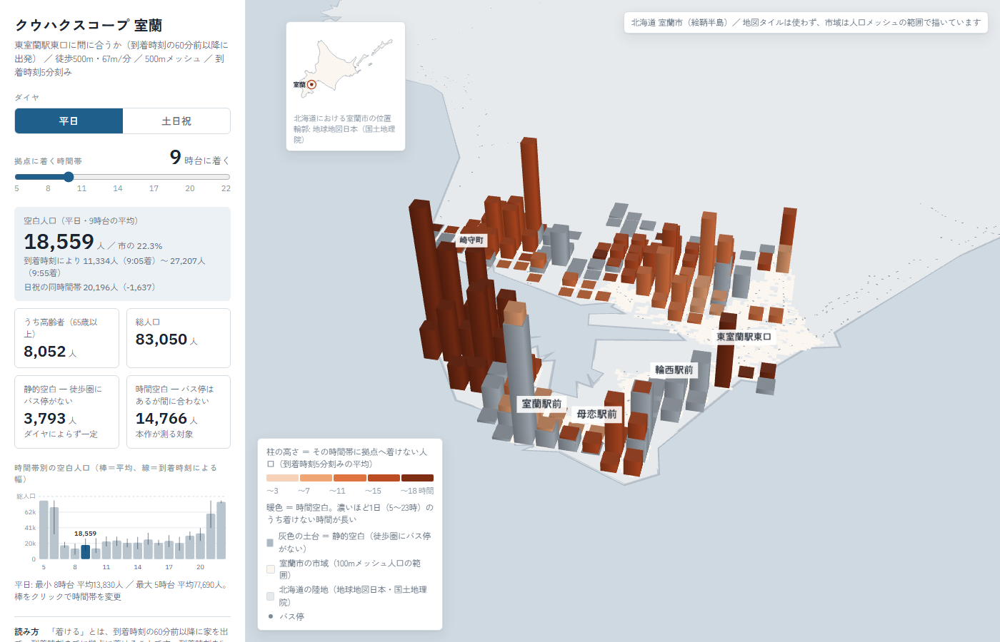

公共交通オープンデータチャレンジ2026 応募作品 ／ 北海道室蘭市・道南バス
バス停からの距離ではなく、時刻表で交通空白を測ります。 同じ地点でも時間帯・曜日で到達できるかが変わり、距離基準ではそれが見えません。 室蘭市の休日、7時台に拠点へ着きたいとき、1時間前に家を出ても間に合わない人は平均で市の 27.9%（23,183人）。 同じ7時台でも7:00着なら46.1%、7:35着なら11.9%と、数分の違いで大きく変わります。

空白の診断から、路線廃止・減便の影響、増便とダイヤシフトの比較、政策文書の下書きまで。 しばらく使われていないと休止しており、最初の表示に1分ほどかかります。
到着の時間帯とダイヤ（平日／土日祝）を切り替えると、拠点に着けない人口の柱が伸縮します。 到着時刻を5分刻みにした平均と幅を表示します。灰色の土台が静的空白（徒歩圏にバス停がない）、暖色の柱が時間空白です。
時刻依存ダイクストラ法の実装、空白人口の定義と5分刻みの評価、処方モジュール、 発見・修正した計算バグ、既知の限界までをまとめたもの。
10種類の分析が、それぞれ何をどう計算しているかを、専門外の読み手向けに説明したもの。
その時点で修正した計算バグと、それによって更新された分析結果の対照表（数値は毎時00分の1点で測った当時のもの）。
Python / Streamlit。自作の時刻依存ダイクストラ法、テスト1,558件。